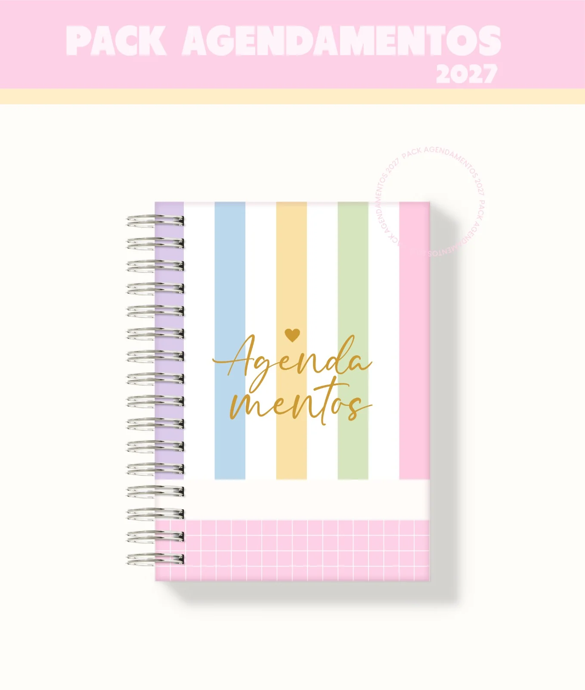
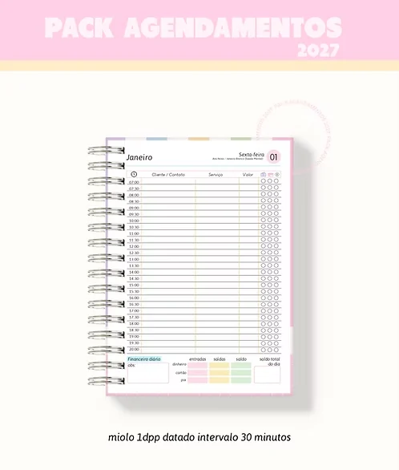

4 cores de miolos
Candy, rosa, lilás e cinza.
Você já levou o Pack de Natal. Agora, tenha também agendas para quem atende com hora marcada, com os miolos prontinhos para imprimir e montar.
Em vez de procurar miolo por miolo, você leva as versões de agendamento, 4 capas e miolos nas 4 cores no mesmo pack. Os 5 marca-páginas vão de brinde!
Adicional ao Pack de Natal · arquivos digitais


+ 5 marca-páginasCandy, rosa, lilás e cinza.
Intervalos de 30 minutos, 1 hora e 2 horas.
1 ou 2 dias por página, com e sem horário.
Capa candy
Candy · 1 dia por página · 30 minutos
Um passo de cada vez
Os atendimentos lado a lado, com espaço para clientes, serviços, valores e financeiro diário.
Já incluído no Pack Agendamentos 2027.Quero acrescentar por R$ 37,90Acrescente um novo tipo de produto ao seu catálogo. Escolha a cor, o intervalo e a versão do miolo. Depois, é imprimir e montar.
5 marca-páginas de brinde para compor seus kits.
O Pack de Natal segue como você comprou. Este adicional é uma escolha sua.
Valor adicional · arquivos digitais
SIM, QUERO O PACK POR R$ 37,90 Não, obrigada. Vou ficar só com o Pack de Natal.Conclua sua compra no checkout.
Para você que produz papelaria e quer acrescentar agendas de atendimento ao catálogo, além dos produtos de Natal.
Os miolos nas 4 cores, intervalos de 30 minutos, 1 hora e 2 horas, versões de 1 e 2 dias por página, com e sem horário, datadas e permanentes. Também vão o miolo para 2 profissionais, as 4 capas e os 5 marca-páginas de brinde.
Você recebe arquivos digitais para imprimir e montar. A impressão, os materiais e a montagem ficam por sua conta.
Sim. Use a opção de seguir sem este pack. Seu pedido de Natal não depende da compra deste adicional. Ao seguir, confira o e-mail ou WhatsApp informado na compra para localizar suas instruções de acesso.